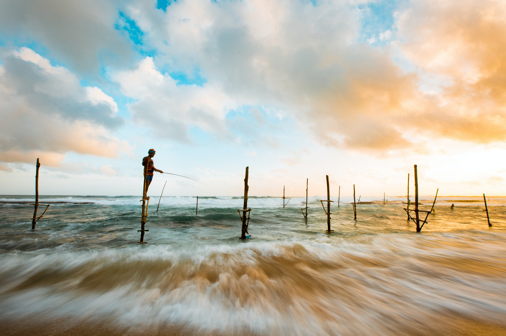

Hikkaduwa

A seaside town in Sri Lanka's Galle district is called Hikkaduwa. Hikkaduwa is a well-known tourist destination in Sri Lanka because of its coral reefs and beaches. It is situated in the Southern Province, 98 kilometers (61 miles) south of Colombo and 17 kilometers (11 miles) north of Galle. The endangered and indigenous purple-faced langur, a shy monkey species found exclusively in Sri Lanka's jungles, nevertheless calls it home despite tremendous development in the last ten years. From north to south, it is separated
Hikkaduwa is located on the Coastal or Southern Rail Line (connecting Colombo through to Matara). It is also located on the A2 highway, connecting Colombo to Wellawaya, which runs mostly parallel to the shore, through the town.
Coral reef

A typical shallow fringing reef, the Hikkaduwa coral reef has an average depth of about 5 meters (16 feet). The coral reef acts as a natural breakwater and slows coastal erosion.The national park's four kilometres of coastline. The average width of the coast is 5 to 50 meters, depending on the season and climate. Here, scuba diving is a well-liked pastime.
Hikkaduwa Economy
Hikkaduwa's economy was traditionally based on fishing and coconut cultivation. This was replaced by tourism when its golden sandy beaches were discovered. It is a well-known international destination for board surfing.[citation needed] The town was featured in an episode of Anthony Bourdain's television show No Reservations.[citation needed]
Hikkaduwa was affected by the tsunami caused by the 2004 Indian Ocean earthquake along with nearby villages Telwatta, Paraliya (site of the Queen of the Sea rail disaster), Dodanduwa, Kahawa and Rathgama. In the aftermath of the tsunami, many of the families who had lost everything were given sewing machines as part of the relief operations. As a result, the town has a multitude of tailors who will custom-make shirts, trousers, and shorts.
Hikkaduwa boasts of a rich atmosphere, as it is an epicentre for many water sports activities. Experiences in Hikkaduwa include dives along the Hikkaduwa reef and the Hikkaduwa National Park, visiting a sea turtle hatchery and unique museums. Whether you are an adrenaline junkie or one who is laidback, Hikkaduwa is perfect for all travellers.